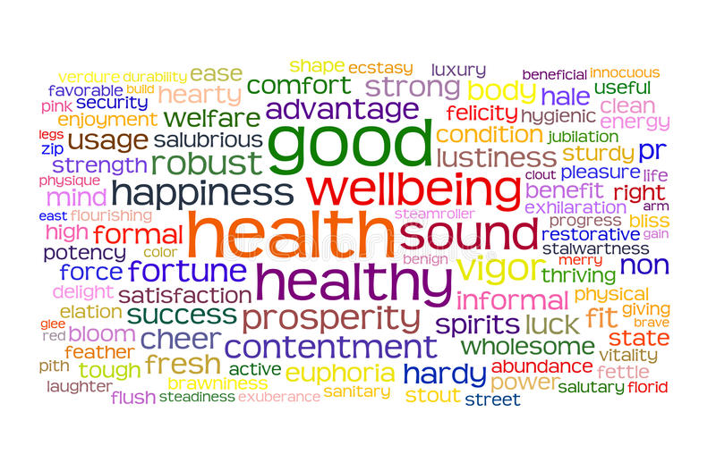

Mood Swings
“Happiness can be found even in the darkest of times, if one only remembers to turn on the light.”
~ Albus Dumbledore ~
Yoga
“Yoga is a dance between control and surrender — between pushing and letting go — and when to push and to let go becomes part of the creative process, part of the open-ended exploration of your well-being.”
~ Joel Kramer ~

Therapy
"The greatest healing therapy is friendship and love."
~ Hubert Humphrey ~
Why is Mental Health Important?
In recent years, there has been increasing acknowledgement of the important role mental health plays in achieving global development goals, as illustrated by the inclusion of mental health in the Sustainable Development Goals.
Depression is one of the leading causes of disability. Suicide is the fourth leading cause of death among 15-29-year-olds.
People with severe mental health conditions die prematurely – as much as two decades early – due to preventable physical conditions.
Despite progress in some countries, people with mental health conditions often experience severe human rights violations, discrimination, and stigma.
Many mental health conditions can be effectively treated at relatively low cost, yet the gap between people needing care and those with access to care remains substantial. Effective treatment coverage remains extremely low.
Increased investment is required on all fronts: for mental health awareness to increase understanding and reduce stigma; for efforts to increase access to quality mental health care and effective treatments.
Mental health is an important part of your well-being.This aspect of your welfare determines how you’re able to operate psychologically, emotionally, and socially among others.
How much of a role your mental health plays in each aspect of your life, it's important to guard and improve psychological wellness using appropriate measures.
That is because different circumstances can affect your mental health, we’ll be highlighting risk factors and signs that may indicate mental distress. But most importantly, we’ll dive into all of the benefits of having your mental health in its best shape.
